CYSTS LIST
- Alexandrium catenella
- Alexandrium kutnerae
- Alexandrium margalefi
- Alexandrium minutum
- Alexandrium peruvianum
- Alexandrium pseudogoniaulax
- Alexandrium tamarense
- Alexandrium taylori
- Alexandrium spp.
- Archaeperidinium bailongense, cyst of
- Archaeperidinium constrictum, cyst of
- Archaeperidinium minutum, cyst of
- Archaeperidinium monospinum, cyst of
- Archaeperidinium saanichi, cyst of
- Archaeperidinium sp., cyst of
- Ataxiodinium choane
- Ataxiodinium confussum
- Ataxiodinium zevenboomii
- Ataxiodinium sp.
- Biecheleria baltica
- Biecheleria cincta
- Biecheleria sp.
- Bitectatodinium spongium
- Bitectatodinium tepikiense
- Bitectatodinium sp.
- Brigantedinium assymmetricum
- Brigantedinium auranteum
- Brigantedinium cariacoense
- Brigantedinium majusculum
- Brigantedinium simplex
- Brigantedinium sp.
- Caspidinium rugosum
- Cryodinium matsuokai
- Cryodinium sp.
- Cryodinium meridianum
- Dalella chathamensis
- Diplopelta symmetrica, cyst of
- Dubridinium caperatum, cyst of
- Dubridinium cassiculum, cyst of
- Dubridinium cavatum, cyst of
- Dubridinium ulsterum, cyst of
- Dubridinium spp., cyst of
- Echinidinium aculeatum
- Echinidinium bispiniformum
- Echinidinium delicatum
- Echinidinium karaense
- Echinidinium granulatum
- Echinidinium sleipnerensis
- Echinidinium transparantum
- Echinidinium zonneveldiae
- Gymnodinium catenatum, cyst of
- Gymnodinium inusitatum, cyst of
- Gymnodinium microreticulatum, cyst of
- Gymnodinium nolerii, cyst of
- Gymnodinium trapeziforme, cyst of
- Impagidinium aculeatum
- Impagidinium caspienense
- Impagidinium pallidum
- Impagidinium paradoxum
- Impagidinium patulum
- Impagidinium plicatum
- Impagidinium sphaericum
- Impagidinium strialatum
- Impagidinium variaseptum
- Impagidinium velorum
- Islandinium brevispinosum
- Islandinium? cezare
- Islandinium minutum
- Leipokatium invisitatum
- Lejeunecysta acuminate
- Lejeunecysta adeliensis
- Lejeunecysta attenuata
- Lejeunecysta beinenensis
- Lejeunecysta catomus
- Lejeunecysta communis
- Lejeunecysta cowiei
- Lejeunecysta epidoma
- Lejeunecysta fallax
- Lejeunecysta globosa
- Lejeunecysta granosa
- Lejeunecysta hyalina
- Lejeunecysta katatonos
- Lejeunecysta lata
- Lejeunecysta marieae
- Lejeunecysta oliva
- Lejeunecysta paratenella
- Lejeunecysta pulchra
- Lejeunecysta rotunda
- Lejeunecysta sabrina
- Lejeunecysta sp.
- Lingulodinium machaerophorum
- Nematosphaeropsis labyrinthus
- Nematosphaeropsis lemniscata
- Nematosphaeropsis rigida
- Nematosphaeropsis scala
- Nematosphaeropsis spp.
- Nia acanthocysta
- Oblea acathocysta, cyst of
- Operculodinium aguinawense
- Operculodinium centrocarpum
- Operculodinium israelianum
- Operculodinium janduchenei
- Operculodinium longispinigerum
- Operculodinium piaseckii
- Operculodinium tegillatum
- Operculodinium microtriainum
- Operculodinium sp.
- Pentapharsodinium dalei
- Peridinium ponticum
- Polykrikos hatmannii, cyst of
- Polykrikos kofoidii, cyst of
- Polykrikos quadratus, cyst of
- Polykrikos schwartzii, cyst of
- Polykrikos sp., cyst of
- Polysphaeridium zoharyi
- Protoperidinium americanum, cyst of
- Protoperidinium biconicum, cyst of
- Protoperidinium conicoides, cyst of
- Protoperidinium denticulatum, cyst of
- Protoperidinium excentricum, cyst of
- Protoperidinium fukuyoi, cyst of
- Protoperidinium fuzhouense, cyst of
- Protoperidinium humile, cyst of
- Protoperidinium lattissimum, cyst of
- Protoperidinium lewisiae, cyst of
- Protoperidinium monospinum, cyst of
- Protoperidinium nudum, cyst of
- Protoperidinium parthenopes, cyst of
- Protoperidinium punctulatum, cyst of
- Protoperidinium stellatum, cyst of
- Protoperidinium thorianum, cyst of
- Protoperidinium thulensense, cyst of
- Protoperidinium tricingulatum, cyst of
- Pyxidinopsis braboi
- Pyxidinopsis psilata
- Pyxidinopsis reticulata
- Pyxidinopsis reticulata (okhotsk)
- Pyxidinopsis sp.
- Qia_lebouriae
- Quinquecuspis concreta
- Scrippsiella acuminata
- Scrippsiella crystallina
- Scrippsiella erinaceus
- Scrippsiella spinifera
- Scrippsiella triffida
- Scrippsiella trochoidea
- Selenopemphix antarctica
- Selenopemphix armageddonensis
- Selenopemphix brevispinosum
- Selenopemphix brinkhuisii
- Selenopemphix conspicua
- Selenopemphix coronata
- Selenopemphix crenata
- Selenopemphix dionaeacysta
- Selenopemphix islandensis
- Selenopemphix nephroides
- Selenopemphix quanta
- Selenopemphix tholus
- Selenopemphix undulata
- Selenopemphix sp.
- Spiniferites alaskensis
- Spiniferites asperulus
- Spiniferites belerius
- Spiniferites bentorii
- Spiniferites cruciformis
- Spiniferites delicatus
- Spiniferites elongatus
- Spiniferites frigidus
- Spiniferites hainanensis
- Spiniferites hyperacanthus
- Spiniferites lazus
- Spiniferites ludhamensis
- Spiniferites membranaceus
- Spiniferites mirabilis
- Spiniferites multisphaerus
- Spiniferites pachydermus
- Spiniferites pacificus
- Spiniferites ramosus
- Spiniferites spinatus
- Spiniferites splendidus
- Stelladinium abei
- Stelladinium bifurcatum
- Stelladinium denticulatum
- Stelladinium reidii
- Stelladinium robustum
- Stelladinium stellatum
- Stelladinium sp.
- Tectatodinium pellitum
- Trinovantedinium applanatum
- Trinovantedinium ferugnomatum
- Trinovantedinium glorianum
- Trinovantedinium harpagonium
- Trinovantedinium pallidifulvum
- Trinovantedinium variabile
- Trinovantedinium sp.
- Tuberculodinium vancampoae
- Votadinium bengalensis
- Votadinium calvum
- Votadinium concavum
- Votadinium elongatum
- Votadinium nanhaiense
- Votadinium pontifossatum
- Votadinium psilodora
- Votadinium reidii
- Votadinium rhomboideum
- Votadinium spinosum
- Xandarodinium xanthum
OPERCULODINIUM ISRAELIANUM
Color: *Transparent.
Surface: *Granulate to fibroreticulate. ***Thin endophragm and thicker fibroreticulate periphragm.
Shape: *Spherical. **Fibromicroreticulate becoming spongy. ***Spherical.
Central body: **38 to 69 um. (diameter), ***40 to 65 um. (diameter).
Process length: **3 to 10 um. (length), ***3 to 10 um. (length).
Process: *Randomly distributed spines/processes. Hollow to fibrous processes. Processes fibrous, distally closed, acuminate striated process basis. **Tapering processes with fibrous bases. Minute aculeae tips. ***Short, solid and fibrous with acuminate to minutely expanded tips. Widen towards base, where the fibrous nature is particularly apparent. Distributed over the entire central body but show subtle alignment close to the cingular margins and elsewhere.
Archeopyle: *Archeopyle precingular by loss of one plate. **Archeopyle precingular 3" ***Formed by loss of the third precingular plate 3", its margin has rounded angles.
Paratabulation: **Absent.
Septa: -
Sulcus: -
Distiguishing characteristics: ***Processes.
Differs from:
Operculodinium centrocarpum: *in having a smaller process relative to the central body diameter.
DESCRIPTION:
Spherical central body with a thin endophragm and thicker fibroreticulate periphragm. The processes are short, solid, and fibrous, with acuminate to minutely expanded tips. The processes widen towards the base, where the fibrous nature of the processes is particularly apparent. Processes are distributed over the entire central body but show subtle alignment close to the cingular margins and elsewhere. The archeopyle is formed by loss of the third precingular plate (3′′) and its margin has rounded angles. (Extracted from Van Nieuwenhove et al., 2020).
LOWEST STRATIGRAPHIC OCURRENCE:
Occasional occurrence in the Middle–Upper Eocene (Guerstein et al., 2008; González Estebenet et al., 2014), lowest occurrence in the Lower Miocene (e.g., Edwards, 1984; Dybkjær, 2004; Londeix and Lopes, 2014) and upward (e.g., McMinn, 1992; Schreck et al., 2013).(Extracted from Van Nieuwenhove et al., 2020).
IMAGES:
| 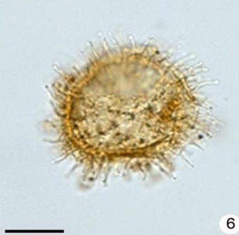1 | 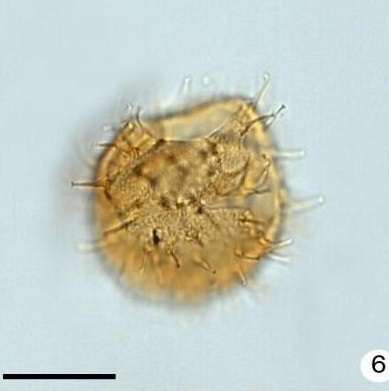2 | 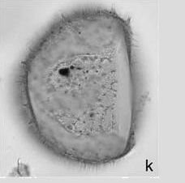3 |
| 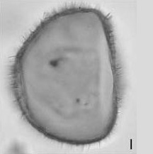4 | 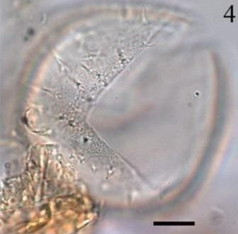5 | 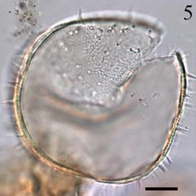6 |
| 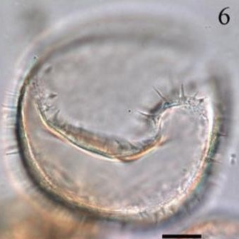7 | 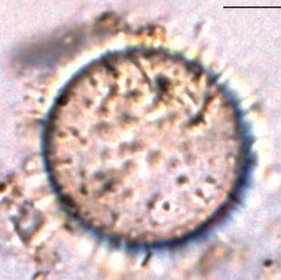8 | 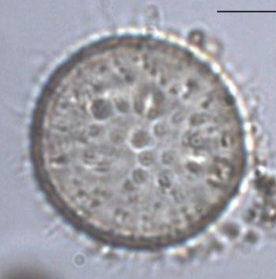9 |
| 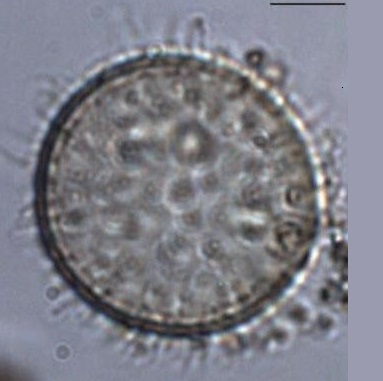10 | 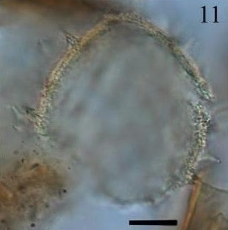11 | 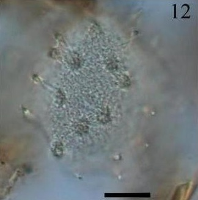12 |
| 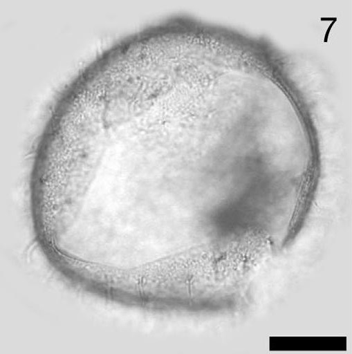13 | 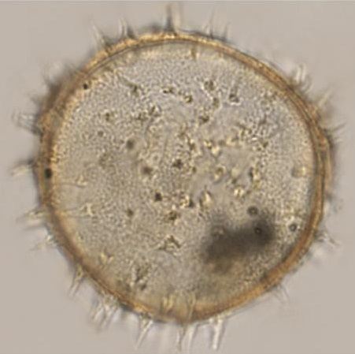14 | 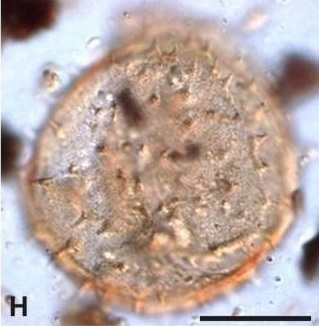15 |
| 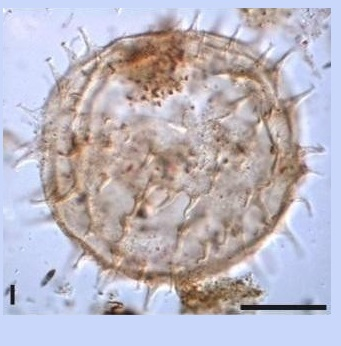16 | 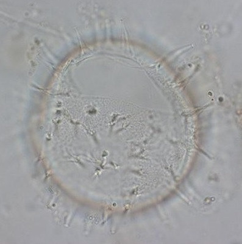17 | 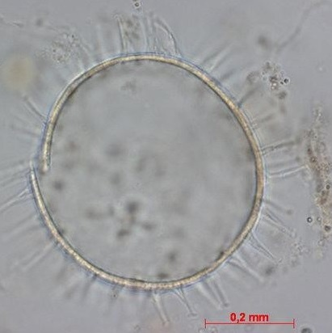18 |
| 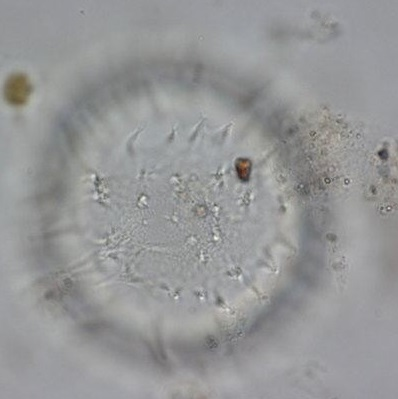19 | 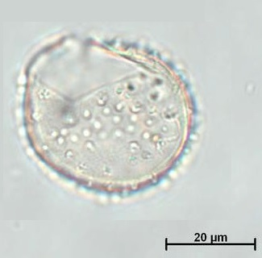20 |  21 21 |
IMAGES REFERENCE:
1. Operculodinium israelianum. Dinoflagellate cyst of upper Rio Turbo Fm. Scale bar: 20 um. (González, 2015 - Slide 2.1-6)
2. Operculodinium israelianum. Dinoflagellate cyst of upper Rio Turbo Fm. Scale bar: 20 um. (González, 2015 - Slide 2.3-6)
3. Operculodinium israelianum. Dinoflagellate cysts from the Verrebroek Dock (VBD) and Deurganck Dock (DGD) sections. View of uncertain of upper surface. Note spongy-fibrous wall surface; central body max. diameter 92 um. Sample VBD 2.6 p1, Q28/4 (Louwye et al., 2004 - Figure 7-k).
4. Operculodinium israelianum. Dinoflagellate cysts from the Verrebroek Dock (VBD) and Deurganck Dock (DGD) sections. Mid focus. Note spongy-fibrous wall surface; central body max. diameter 92 um. Sample VBD 2.6 p1, Q28/4 (Louwye et al., 2004 - Figure 7-l).
5. Operculodinium israelianum. Single specimen with many short capitate processes with striations at the base and an archeopyle corresponding to 3", 53-18B. Scale bar: 10 um. (Plate II-4).
6. Operculodinium israelianum. Single specimen with many short capitate processes with striations at the base and an archeopyle corresponding to 3", 53-18B. Scale bar: 10 um. (Plate II-5).
7. Operculodinium israelianum. Single specimen with many short capitate processes with striations at the base and an archeopyle corresponding to 3", 53-18B. Scale bar: 10 um. (Plate II-6).
8. Operculodinium israelianum. (Plate I-6).
9. Operculodinium israelianum. (Plate I-7).
10. Operculodinium israelianum. (Plate I-8).
11. Operculodinium israelianum. Single specimen, 47-4A. Scale bar: 10 um. (Van Hauwaert, 2016 - Plate 1-11).
12. Operculodinium israelianum. Single specimen, 47-4A. Scale bar: 10 um. (Van Hauwaert, 2016 - Plate 1-12).
13. Operculodinium israelianum. Bright-field photomicrographs, AB2, Slide 1, R41/1, dorsal surface. Scale bar: 10 um. (Pospelova et al., 2005 - Figure 3-7).
14. Operculodinium israelianum. Bright-field light micrographs of selected dinocyst taxa. Scale bar: 20 um. (Limoges, 2014 - Plate 2-4).
15. Operculodinium israelianum. Photomicrographs of gonyaulacoid dinoflagellate cysts. Scale bar: 20 um. (Premaor, 2016 - Figure II.12-H).
16. Operculodinium israelianum. Photomicrographs of gonyaulacoid dinoflagellate cysts. Scale bar: 20 um. (Premaor, 2016 - Figure II.12-I).
17. Operculodinium israelianum. MARUM. Single grain, western Indian Ocean. Dorsal view.
18. Operculodinium israelianum. MARUM. Single grain, western Indian Ocean. Cross section.
19. Operculodinium israelianum. MARUM. Single grain, western Indian Ocean. Ventral view.
20. Operculodinium israelianum. Cyst with reduced processes, single grain. Reduced processes. (Zonneveld, 2015 - Figure 1-4).
21. Operculodinium israelianum. Cyst with reduced processes, single grain. Ventral view. (Zonneveld, 2015 - Figure 1-5).
BIBLIOGRAPHY:
- González Estebenet, M. S. (2015). Quistes de dinoflagelados del Eoceno del sudoeste de Santa Cruz: análisis bioestratigráfico y paleoambiental.
- Limoges, A., de Vernal, A., & Van Nieuwenhove, N. (2014). Long-term hydrological changes in the northeastern Gulf of Mexico (ODP-625B) during the Holocene and late Pleistocene inferred from organic-walled dinoflagellate cysts. Palaeogeography, Palaeoclimatology, Palaeoecology, 414, 178-191.
- Louwye, S., Head, M. J., & de Schepper, S. (2004). Dinoflagellate cyst stratigraphy and palaeoecology of the Pliocene in northern Belgium, southern North Sea Basin. Geological Magazine, 141(3), 353-378.
- Marret, F., & Kim, S. Y. (2009). Operculodinium aguinawense sp. nov., a dinoflagellate cyst from the Late Pleistocene and recent sediments of the east equatorial Atlantic Ocean. Palynology, 33(1), 125-139. (**)
- Pospelova, V., Chmura, G. L., Boothman, W. S., & Latimer, J. S. (2005). Spatial distribution of modern dinoflagellate cysts in polluted estuarine sediments from Buzzards Bay (Massachusetts, USA) embayments. Marine Ecology Progress Series, 292, 23-40.
- Premaor, E. (2016). Bioestratigrafia das associações de cistos de dinoflagelados do Cretáceo Inferior (Albiano) ao Neogeno (Plioceno) da Bacia de Pelotas, Brasil.
- Van Hauwaert, T. (2016). Recent dinoflagellate cysts from the Chesapeake Estuary (Maryland and Virginia, USA): taxonomy and ecological preferences (Doctoral dissertation, M. Sc. Thesis, Ghent University, Ghent, Belgium).
- Van Nieuwenhove, N., Head, M. J., Limoges, A., Pospelova, V., Mertens, K. N., Matthiessen, J., ... & Rochon, A. (2020). An overview and brief description of common marine organic-walled dinoflagellate cyst taxa occurring in surface sediments of the Northern Hemisphere. Marine Micropaleontology, 159, 101814. (***)
- Zonneveld, K. A., & Pospelova, V. (2015). A determination key for modern dinoflagellate cysts. Palynology, 39(3), 387-409. (*)